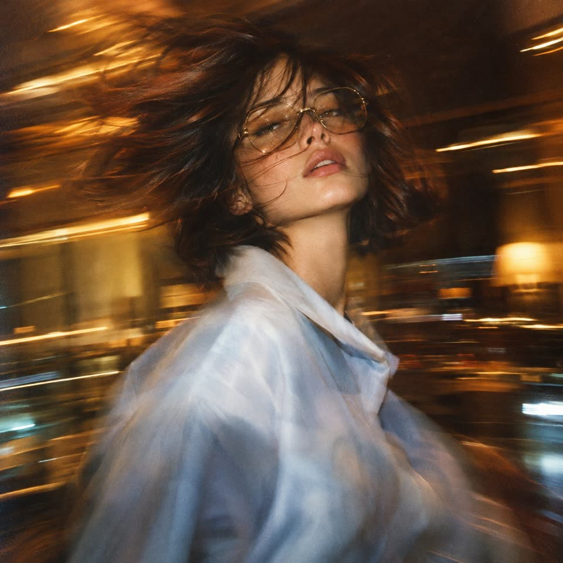

Experimental motion-blur 35mm portrait
GRN-010Grain / Filterunspecifiedby Tanvir (@Tanvir48992)2026-10-08

Head-whip motion-blur fashion portrait on 35mm — face partly sharp, hair and shirt dissolving into streaks; dreamy analog editorial.
Prompt
Ultra-realistic experimental motion-blur fashion portrait, square 1:1 composition, shot on 35mm film with an analog, dreamy editorial look. A young woman with a short, tousled dark-brown bob with warm auburn highlights whips her head sharply, so her hair flies upward and outward in long, soft streaks. Her face stays partly sharp at the center of the frame while everything else dissolves into motion: head tilted back slightly, chin lifted, eyes half hidden behind oversized, clear, rounded-hexagon wire-frame glasses with a faint amber tint, loose strands of hair crossing her face, lips softly parted, a calm, detached, almost ecstatic expression. Natural skin with soft warm tones and subtle freckles. She wears an oversized, loose pale blue-white satin or cotton shirt with a wide collar, billowing and smeared with motion blur as her shoulders twist. Setting: an indoor space, such as a hotel lobby or restaurant, completely abstracted by long exposure. Warm amber and golden light sources stretch into horizontal and diagonal light trails and glowing streaks across the frame, with dark brown shadows and hints of teal and cool white in the lower corners. Lighting and camera: long exposure (around 1/4 second) combined with a flash or ambient pop that freezes only part of the face, intentional camera shake and rotational blur, strong warm highlights and glowing bloom, rich amber, copper, chocolate-brown, and cool blue-grey palette, Kodak Portra 800 or Cinestill 800T look, visible film grain, slight halation around the lights, soft vignette, low-key and moody. Shot on a 35mm lens at f/2, cinematic, ethereal, high-fashion editorial, like a Wong Kar-wai-inspired motion photo.
Tags: 35mm, motion blur, analog editorial